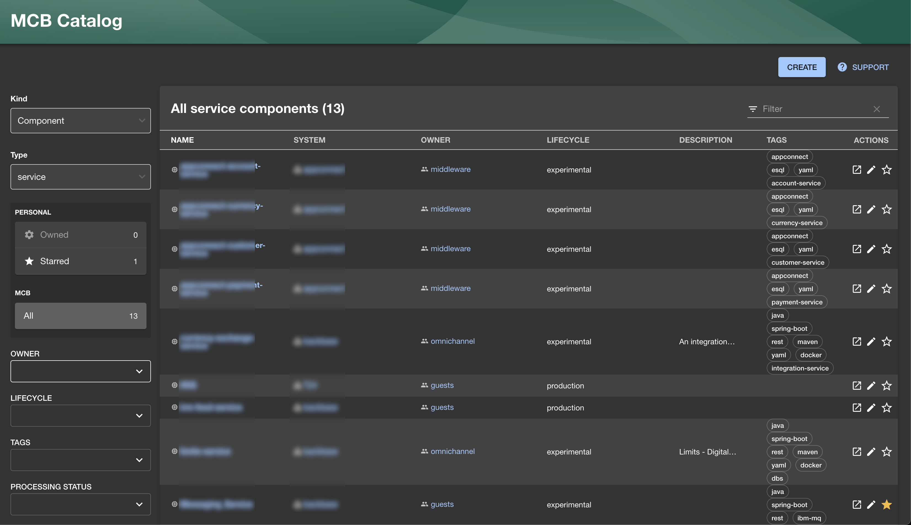
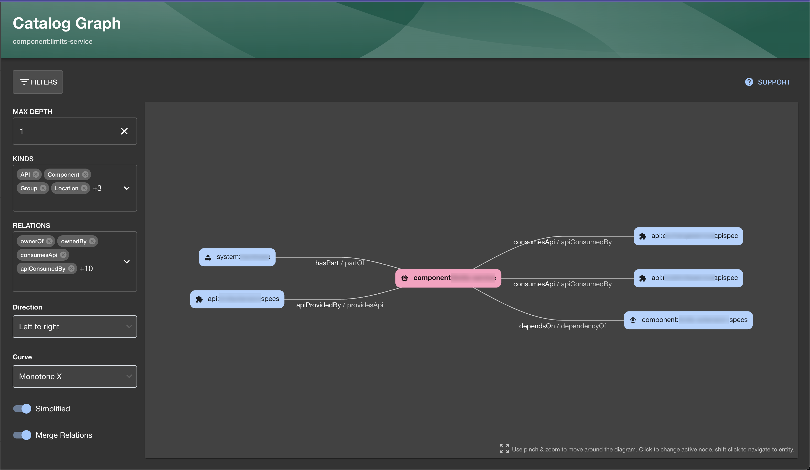
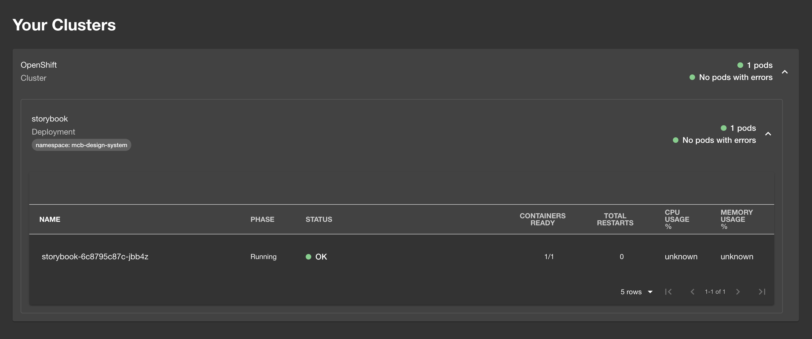
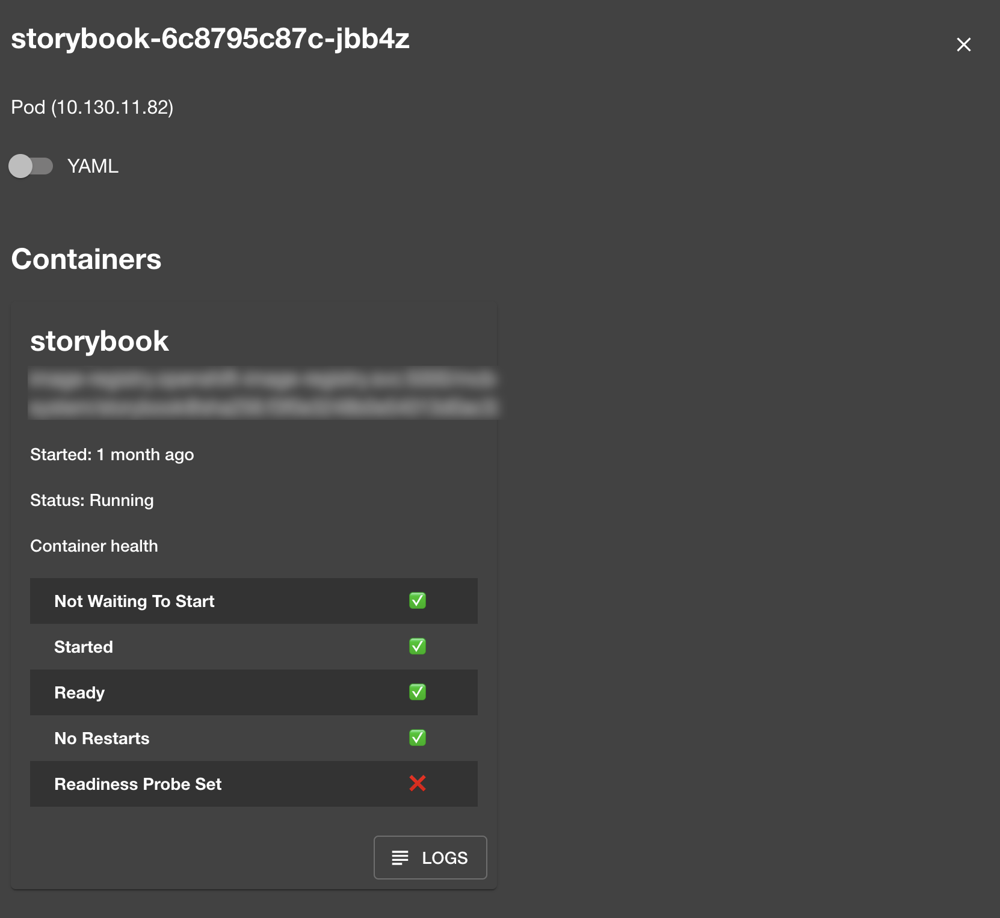
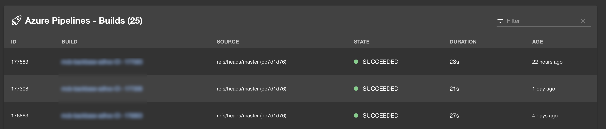
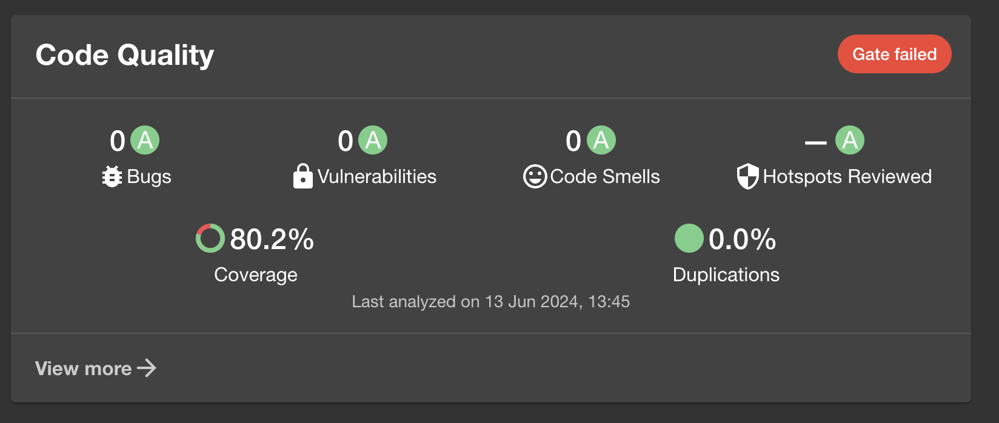
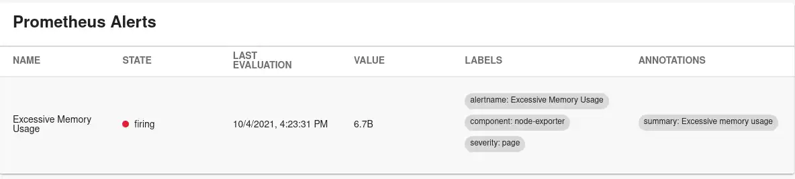
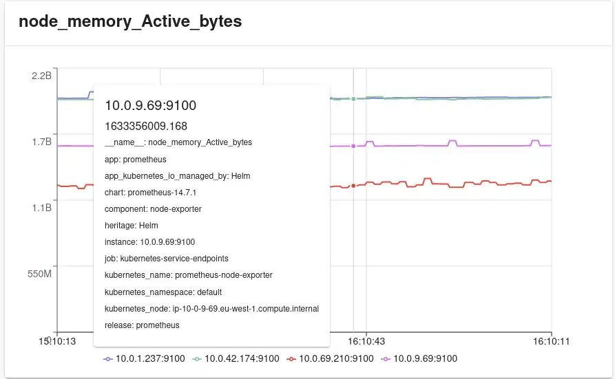
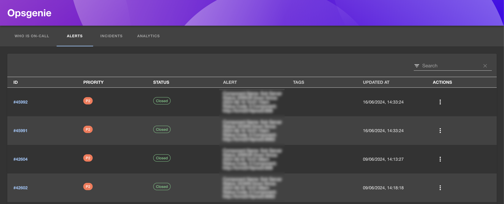

<!DOCTYPE html>


<html lang="en">
  

    <head>
      <meta charset="utf-8" />
       
      <meta name="keywords" content="agile, tdd, software engineering" />
       
      <meta
        name="viewport"
        content="width=device-width, initial-scale=1, maximum-scale=1"
      />
      
        <meta property="og:image" content="bs.png"/>
        <meta property="og:description" content="We&#39;ve just completed a proof of concept on Backstage - an Internal Developer Portal from Spotify. Here&#39;s what we learned..."/>
        
      <title>Building Developer Portals with Backstage |  nick dot blog</title>
  <meta name="generator" content="hexo-theme-ayer">
      
      <link rel="shortcut icon" href="/favicon.ico" />
       
<link rel="stylesheet" href="/dist/main.css">

      
<link rel="stylesheet" href="/css/fonts/remixicon.css">

      
<link rel="stylesheet" href="/css/custom.css">
 
      <script src="https://cdn.staticfile.org/pace/1.2.4/pace.min.js"></script>
       
<!-- Global site tag (gtag.js) - Google Analytics -->
<script async src="https://www.googletagmanager.com/gtag/js?id=G-KXJW9BVBJ4"></script>
<script>
  window.dataLayer = window.dataLayer || [];
  function gtag(){dataLayer.push(arguments);}
  gtag('js', new Date());
  gtag('config', 'G-KXJW9BVBJ4');
</script>

 

      <link
        rel="stylesheet"
        href="https://cdn.jsdelivr.net/npm/@sweetalert2/theme-bulma@5.0.1/bulma.min.css"
      />
      <script src="https://cdn.jsdelivr.net/npm/sweetalert2@11.0.19/dist/sweetalert2.min.js"></script>

      <!-- mermaid -->
      
      <style>
        .swal2-styled.swal2-confirm {
          font-size: 1.6rem;
        }
      </style>
    <link rel="alternate" href="/atom.xml" title="nick dot blog" type="application/atom+xml">
</head>
  </html>
</html>


<body>
  <div id="app">
    
      
    <main class="content on">
      <section class="outer">
  <article
  id="post-backstage"
  class="article article-type-post"
  itemscope
  itemprop="blogPost"
  data-scroll-reveal
>
  <div class="article-inner">
    
    <header class="article-header">
       
<h1 class="article-title sea-center" style="border-left:0" itemprop="name">
  Building Developer Portals with Backstage
</h1>
 

      
    </header>
     
    <div class="article-meta">
      <a href="/2024/06/19/backstage/" class="article-date">
  <time datetime="2024-06-19T12:11:22.000Z" itemprop="datePublished">2024-06-19</time>
</a> 
  <div class="article-category">
    <a class="article-category-link" href="/categories/Backstage/">Backstage</a>
  </div>
  
<div class="word_count">
    <span class="post-time">
        <span class="post-meta-item-icon">
            <i class="ri-quill-pen-line"></i>
            <span class="post-meta-item-text"> Word count:</span>
            <span class="post-count">1.5k</span>
        </span>
    </span>

    <span class="post-time">
        &nbsp; | &nbsp;
        <span class="post-meta-item-icon">
            <i class="ri-book-open-line"></i>
            <span class="post-meta-item-text"> Reading time≈</span>
            <span class="post-count">9 min</span>
        </span>
    </span>
</div>
 
    </div>
      
    <div class="tocbot"></div>


  
    <div class="article-entry" itemprop="articleBody">
       
  <p>We’ve just completed a proof of concept on Backstage. Here’s what we learned…</p>
<p>Backstage is an Internal Developer Platform (IDP) originally created at Spotify and then open-sourced to the Cloud Native Computing Foundation. Out of the box it provides a Software Catalog, Developer Documentation and Software Templates. There is also a thriving plugin ecosystem that expands Backstage’s capabilities even further.</p>
<h1 id="What-problem-are-we-solving-here"><a href="#What-problem-are-we-solving-here" class="headerlink" title="What problem are we solving here?"></a>What problem are we solving here?</h1><p>We didn’t initially go out looking for an IDP, rather we found ourselves looking to address a number of specific issues.</p>
<p>In our last DevEx survey, the ability to find information quickly was raised as an issue. The feedback indicated that whilst the quality of information was generally good it often took time to find the right information. We want people to get to the relevant documentation quickly and have it in a consistent format.</p>
<p>Another issue is the ability to provide a standardized diagnostic and operational interface to our applications. Presently, depending on the team and platform, there are differences in how you access logs, view stats and traces and initiate operational procedures. This means that there is a degree of domain knowledge required for each application. This domain knowledge makes it difficult for our support team to work independently.</p>
<p>Lastly we want to make it easier for people to discover available services and their owners. In a recent Incident it took too long to solve a problem because the people on the call had an imperfect understanding of how the application fit together. As a result we completely missed a failing component. We want to make it easier for people to understand how the various parts of our systems relate to one another.</p>
<p>We started looking at how other organisations are addressing these issues and discovered Backstage. </p>
<h1 id="The-Proof-of-Concept"><a href="#The-Proof-of-Concept" class="headerlink" title="The Proof of Concept"></a>The Proof of Concept</h1><p>In order to effectively evaluate Backstage you need to populate it with your own data and configure plugins relevant to your environment. We gave some of the teams a little training on the Backstage Catalog Descriptor format and asked them to model some of their applications.</p>
<p>We then set about configuring Backstage and some plugins… </p>
<h2 id="Software-Catalog"><a href="#Software-Catalog" class="headerlink" title="Software Catalog"></a>Software Catalog</h2><p>The Software Catalog lies at the heart of Backstage. It allows you to visualise how your applications fit together and who owns what parts. For example you can start with your Mobile or Web Application, and then find all the services it depends on and who owns them. You can then drill through to see the next level of services and infrastructure. </p>
<p>There is a fully-featured search facility so that you can find items by Type, Tag, Owner etc. </p>


<p>Or you can navigate through the information as a dependency graph.</p>



<h2 id="Kubernetes"><a href="#Kubernetes" class="headerlink" title="Kubernetes"></a>Kubernetes</h2><p>As you navigate through the Software Catalog you can view Kubernetes information and status of each service. This has proved to be invaluable for us as we run across multiple namespaces and security is configured to minimise access. This complicates the diagnostic process as we would typically have to log into multiple namespaces to check logs and service status. With this plugin we can access logs and status immediately.</p>
<p>You get an overview of the deployment…</p>


<p>As well as detailed information and logs per Pod.</p>


<h2 id="Azure-DevOps"><a href="#Azure-DevOps" class="headerlink" title="Azure DevOps"></a>Azure DevOps</h2><p>We can see the status of our Build Pipelines and latest Pull Requests in the context of each component. This makes it easy to spot if there have been recent changes to a component or if we have had a recent build failure.</p>


<h2 id="SonarQube"><a href="#SonarQube" class="headerlink" title="SonarQube"></a>SonarQube</h2><p>The SonarQube plugin allows us to see a summary of the metrics for each component: Smells, Code Coverage, Security etc.</p>


<h2 id="Prometheus"><a href="#Prometheus" class="headerlink" title="Prometheus"></a>Prometheus</h2><p>Where we have Prometheus Traces and Alerts configured these are displayed in the context of the component.</p>




<h2 id="OpsGenie"><a href="#OpsGenie" class="headerlink" title="OpsGenie"></a>OpsGenie</h2><p>Any OpsGenie alerts or incidents related to the component can be seen in context. In addition the Analytics and On-Call information for all the teams is available in a separate view.</p>


<h2 id="Initial-Impressions"><a href="#Initial-Impressions" class="headerlink" title="Initial Impressions"></a>Initial Impressions</h2><h2 id="Single-Pane-of-Glass"><a href="#Single-Pane-of-Glass" class="headerlink" title="Single Pane of Glass"></a>Single Pane of Glass</h2><p>Backstage centralises information that would typically be spread across multiple sites. Our teams have information stored in Confluence, OpenShift, Grafana, Prometheus, OpsGenie and Sonar. Backstage surfaces this information on a single ‘pane of glass’ - I can rapidly jump into the system that I am looking for. Yes you could do this using a page in Confluence but having the high-level information rendered in Backstage saves me time and means I don’t have to click through to check if everything is OK. This is nice - but it’s not life-changing. </p>
<p>Where this facility really starts to shine is where I move out of a team I’m familiar. I know where all <em>my</em> links are but teams do things slightly differently. This means that you need to know where to look for a team’s information. Backstage solves this by providing me access to each team’s information in a consistent manner and independent of my specific access rights. For example - I would not typically have access to each team’s Openshift namespace. Backstage allows me to quickly check if a service has failing Pods and view basic log information.</p>
<h2 id="Different-Perspectives"><a href="#Different-Perspectives" class="headerlink" title="Different Perspectives"></a>Different Perspectives</h2><p>Backstage allows teams to model their own software in terms of how it is structured, the API’s they provide and their dependencies on other team’s services. This has created a view our environment that would have been difficult to create previously. With Backstage I can quickly navigate through layers of services and infrastructure. At any point I can then drill into development information (source code, PR’s, Sonar) or into the operational information (K8S, Prometheus) for each service. This makes it easy for teams to discover services but it also promotes discussion about how best to model our environment. The use case that the teams immediately latched upon was that this simplifies impact analysis. With a few clicks you can see all the teams that would be affected by a potential change.</p>
<h2 id="Maintenance"><a href="#Maintenance" class="headerlink" title="Maintenance"></a>Maintenance</h2><p>One of the things I really like about Backstage is that it does not require us to create new data via it’s UI. Rather a yaml file is added to the repo and this is automatically picked up. This has been a sticking point for us in the past - where information is stored separately it means people need to remember (or more often be mercilessly nagged) to update these systems. With this approach the yaml is maintained as part of the application’s source code. </p>
<h2 id="Challenges"><a href="#Challenges" class="headerlink" title="Challenges"></a>Challenges</h2><p>Whilst Backstage makes it easy to import your information you still need to ensure that team’s create their catalog entries in the first place and that these entries reflect reality.  Since the information in Backstage links to other systems it is easy to spot missing or broken links but getting the modelling right could be a significant challenge. One specific concern I have is in the level of granularity. Modelling at too coarse a level means you would miss important details. Modelling at too fine a level would create potentially hundreds of artifacts and obscure important information. </p>
<p>Lastly, Backstage is not a packaged application when running on-prem. There is a steep learning curve in terms of how plugins are added and configured. If you are not familiar with modern web development this could be a significant challenge. Fortunately, there is a cloud-based version of Backstage available which could be a better option for some. Documentation is generally good but we have had some challenges which I have written about <a target="_blank" rel="noopener" href="https://nickmck.net/2024/05/22/backstage-openshift/">here</a>.</p>
<h2 id="Worth-the-effort"><a href="#Worth-the-effort" class="headerlink" title="Worth the effort?"></a>Worth the effort?</h2><p>A question we wanted to answer is “Is the effort to describe your application and services worth it compared to the potential value that Backstage brings?”. The potential benefits for us include improved discoverability of services, access to documentation, teams being more independent and faster resolution of incidents. The cost is that we need teams to describe their application. Here’s what a typical Backstage entry looks like:</p>
<figure class="highlight yaml"><table><tr><td class="gutter"><pre><span class="line">1</span><br><span class="line">2</span><br><span class="line">3</span><br><span class="line">4</span><br><span class="line">5</span><br><span class="line">6</span><br><span class="line">7</span><br><span class="line">8</span><br><span class="line">9</span><br><span class="line">10</span><br><span class="line">11</span><br><span class="line">12</span><br><span class="line">13</span><br><span class="line">14</span><br><span class="line">15</span><br><span class="line">16</span><br><span class="line">17</span><br><span class="line">18</span><br><span class="line">19</span><br><span class="line">20</span><br><span class="line">21</span><br><span class="line">22</span><br><span class="line">23</span><br><span class="line">24</span><br><span class="line">25</span><br><span class="line">26</span><br><span class="line">27</span><br><span class="line">28</span><br><span class="line">29</span><br><span class="line">30</span><br><span class="line">31</span><br><span class="line">32</span><br><span class="line">33</span><br><span class="line">34</span><br><span class="line">35</span><br><span class="line">36</span><br><span class="line">37</span><br><span class="line">38</span><br><span class="line">39</span><br><span class="line">40</span><br><span class="line">41</span><br><span class="line">42</span><br><span class="line">43</span><br><span class="line">44</span><br><span class="line">45</span><br></pre></td><td class="code"><pre><span class="line"><span class="meta">---</span></span><br><span class="line"><span class="comment"># https://backstage.io/docs/features/software-catalog/descriptor-format#kind-system</span></span><br><span class="line"><span class="attr">apiVersion:</span> <span class="string">backstage.io/v1alpha1</span></span><br><span class="line"><span class="attr">kind:</span> <span class="string">System</span></span><br><span class="line"><span class="attr">metadata:</span></span><br><span class="line">  <span class="attr">name:</span> <span class="string">mcb-system</span></span><br><span class="line"><span class="attr">spec:</span></span><br><span class="line">  <span class="attr">owner:</span> <span class="string">mcb-engineering</span></span><br><span class="line"><span class="meta">---</span></span><br><span class="line"><span class="comment"># https://backstage.io/docs/features/software-catalog/descriptor-format#kind-component</span></span><br><span class="line"><span class="attr">apiVersion:</span> <span class="string">backstage.io/v1alpha1</span></span><br><span class="line"><span class="attr">kind:</span> <span class="string">Component</span></span><br><span class="line"><span class="attr">metadata:</span></span><br><span class="line">  <span class="attr">name:</span> <span class="string">mcb-component</span></span><br><span class="line">  <span class="attr">annotations:</span></span><br><span class="line">    <span class="attr">backstage.io/source-location:</span> <span class="string">url:https://dev.azure.com/****/</span></span><br><span class="line">    <span class="attr">sonarqube.org/project-key:</span> <span class="string">&quot;******&quot;</span></span><br><span class="line">    <span class="attr">dev.azure.com/project-repo:</span> <span class="string">&quot;******&quot;</span></span><br><span class="line">    <span class="attr">dev.azure.com/host-org:</span> <span class="string">dev.azure.com/*****</span></span><br><span class="line">    <span class="attr">opsgenie.com/component-selector:</span> <span class="string">&quot;responders:&#x27;***&#x27;&quot;</span></span><br><span class="line">    <span class="attr">prometheus.io/rule:</span> <span class="string">jvm_memory_used_bytes,</span> <span class="string">jvm_threads_live_threads</span></span><br><span class="line">    <span class="attr">prometheus.io/alert:</span> <span class="string">&quot;***-availability&quot;</span></span><br><span class="line">    <span class="attr">backstage.io/techdocs-ref:</span> <span class="string">url:https://***</span></span><br><span class="line">    <span class="attr">backstage.io/kubernetes-label-selector:</span> <span class="string">&#x27;app=***bpm-application***&#x27;</span></span><br><span class="line"><span class="attr">spec:</span></span><br><span class="line">  <span class="attr">type:</span> <span class="string">service</span></span><br><span class="line">  <span class="attr">lifecycle:</span> <span class="string">production</span></span><br><span class="line">  <span class="attr">owner:</span> <span class="string">mcb-engineering</span></span><br><span class="line">  <span class="attr">system:</span> <span class="string">mcb-system</span></span><br><span class="line">  <span class="attr">providesApis:</span> [<span class="string">mcb-api</span>]</span><br><span class="line"><span class="meta">---</span></span><br><span class="line"><span class="comment"># https://backstage.io/docs/features/software-catalog/descriptor-format#kind-api</span></span><br><span class="line"><span class="attr">apiVersion:</span> <span class="string">backstage.io/v1alpha1</span></span><br><span class="line"><span class="attr">kind:</span> <span class="string">API</span></span><br><span class="line"><span class="attr">metadata:</span></span><br><span class="line">  <span class="attr">name:</span> <span class="string">mcb-api</span></span><br><span class="line"><span class="attr">spec:</span></span><br><span class="line">  <span class="attr">type:</span> <span class="string">openapi</span></span><br><span class="line">  <span class="attr">lifecycle:</span> <span class="string">production</span></span><br><span class="line">  <span class="attr">owner:</span> <span class="string">mcb-engineering</span></span><br><span class="line">  <span class="attr">system:</span> <span class="string">mcb-system</span></span><br><span class="line">  <span class="attr">definition:</span> </span><br><span class="line">    <span class="string">$text:</span> <span class="string">https://***</span></span><br><span class="line"><span class="meta">---</span></span><br><span class="line"><span class="meta"></span></span><br></pre></td></tr></table></figure>

<p>The feedback so far to this question is ‘Yes’. That said we are proceeding slowly adding services one at a time and tweaking Backstage as we go. Ultimately though we will measure the success of Backstage by whether or not people use it.  </p>
<h1 id="Next-up"><a href="#Next-up" class="headerlink" title="Next up"></a>Next up</h1><p>There are 2 other aspects of Backstage that I’ve not discussed here: Templates and Documentation. We’ve had a look at these facilities but I’ll cover them in a future post.</p>
 
      <!-- reward -->
      
    </div>
    

    <!-- copyright -->
    
    <div class="declare">
      <ul class="post-copyright">
        <li>
          <i class="ri-copyright-line"></i>
          <strong>Copyright： </strong>
          
          Copyright is owned by the author. For commercial reprints, please contact the author for authorization. For non-commercial reprints, please indicate the source.
          
        </li>
      </ul>
    </div>
    
    <footer class="article-footer">
       
  <ul class="article-tag-list" itemprop="keywords"><li class="article-tag-list-item"><a class="article-tag-list-link" href="/tags/devops/" rel="tag">devops</a></li></ul>

    </footer>
  </div>

   
  <nav class="article-nav">
    
    
      <a href="/2024/05/22/backstage-openshift/" class="article-nav-link">
        <strong class="article-nav-caption">Next Post</strong>
        <div class="article-nav-title">Deploying Backstage on Openshift in a Corporate environment.</div>
      </a>
    
  </nav>

  
   
<div class="gitalk" id="gitalk-container"></div>

<link rel="stylesheet" href="https://cdn.staticfile.org/gitalk/1.7.2/gitalk.min.css">


<script src="https://cdn.staticfile.org/gitalk/1.7.2/gitalk.min.js"></script>


<script src="https://cdn.staticfile.org/blueimp-md5/2.19.0/js/md5.min.js"></script>

<script type="text/javascript">
  var gitalk = new Gitalk({
    clientID: '8318211c28156a054b60',
    clientSecret: 'a3e7c2c22e61867951cbca3c52fbcc22f43dcfb8',
    repo: 'BlogComments',
    owner: 'nickmza',
    admin: ['nickmza'],
    // id: location.pathname,      // Ensure uniqueness and length less than 50
    id: md5(location.pathname),
    distractionFreeMode: false,  // Facebook-like distraction free mode
    pagerDirection: 'last'
  })

  gitalk.render('gitalk-container')
</script>

  
   
    <script src="https://cdn.staticfile.org/twikoo/1.4.18/twikoo.all.min.js"></script>
    <div id="twikoo" class="twikoo"></div>
    <script>
        twikoo.init({
            envId: ""
        })
    </script>
 
</article>

</section>
      <footer class="footer">
  <div class="outer">
    <ul>
      <li>
        Copyrights &copy;
        2015-2024
        <i class="ri-heart-fill heart_icon"></i> Nick Mckenzie
      </li>
    </ul>
    <ul>
      <li>
        
      </li>
    </ul>
    <ul>
      <li>
        
      </li>
    </ul>
    <ul>
      
    </ul>
    <ul>
      
    </ul>
    <ul>
      <li>
        <!-- cnzz统计 -->
        
        <script type="text/javascript" src='https://s9.cnzz.com/z_stat.php?id=1278069914&amp;web_id=1278069914'></script>
        
      </li>
    </ul>
  </div>
</footer>    
    </main>
    <div class="float_btns">
      <div class="totop" id="totop">
  <i class="ri-arrow-up-line"></i>
</div>

<div class="todark" id="todark">
  <i class="ri-moon-line"></i>
</div>

    </div>
    <aside class="sidebar on">
      <button class="navbar-toggle"></button>
<nav class="navbar">
  
  <div class="logo">
    <a href="/"></a>
  </div>
  
  <ul class="nav nav-main">
    
    <li class="nav-item">
      <a class="nav-item-link" href="/">Home</a>
    </li>
    
    <li class="nav-item">
      <a class="nav-item-link" href="/archives">Archives</a>
    </li>
    
    <li class="nav-item">
      <a class="nav-item-link" href="/categories">Categories</a>
    </li>
    
    <li class="nav-item">
      <a class="nav-item-link" href="/tags">Tags</a>
    </li>
    
    <li class="nav-item">
      <a class="nav-item-link" href="/Resources">Resources</a>
    </li>
    
    <li class="nav-item">
      <a class="nav-item-link" href="/about">About</a>
    </li>
    
  </ul>
</nav>
<nav class="navbar navbar-bottom">
  <ul class="nav">
    <li class="nav-item">
      
      <a class="nav-item-link nav-item-search"  title="Search">
        <i class="ri-search-line"></i>
      </a>
      
      
      <a class="nav-item-link" target="_blank" href="/atom.xml" title="RSS Feed">
        <i class="ri-rss-line"></i>
      </a>
      
    </li>
  </ul>
</nav>
<div class="search-form-wrap">
  <div class="local-search local-search-plugin">
  <input type="search" id="local-search-input" class="local-search-input" placeholder="Search...">
  <div id="local-search-result" class="local-search-result"></div>
</div>
</div>
    </aside>
    <div id="mask"></div>

<!-- #reward -->
<div id="reward">
  <span class="close"><i class="ri-close-line"></i></span>
  <p class="reward-p"><i class="ri-cup-line"></i>请我喝杯咖啡吧~</p>
  <div class="reward-box">
    
    <div class="reward-item">
      
      <span class="reward-type">支付宝</span>
    </div>
    
    
    <div class="reward-item">
      
      <span class="reward-type">微信</span>
    </div>
    
  </div>
</div>
    
<script src="/js/jquery-3.6.0.min.js"></script>
 
<script src="/js/lazyload.min.js"></script>

<!-- Tocbot -->
 
<script src="/js/tocbot.min.js"></script>

<script>
  tocbot.init({
    tocSelector: ".tocbot",
    contentSelector: ".article-entry",
    headingSelector: "h1, h2, h3, h4, h5, h6",
    hasInnerContainers: true,
    scrollSmooth: true,
    scrollContainer: "main",
    positionFixedSelector: ".tocbot",
    positionFixedClass: "is-position-fixed",
    fixedSidebarOffset: "auto",
  });
</script>

<script src="https://cdn.staticfile.org/jquery-modal/0.9.2/jquery.modal.min.js"></script>
<link
  rel="stylesheet"
  href="https://cdn.staticfile.org/jquery-modal/0.9.2/jquery.modal.min.css"
/>
<script src="https://cdn.staticfile.org/justifiedGallery/3.8.1/js/jquery.justifiedGallery.min.js"></script>

<script src="/dist/main.js"></script>

<!-- ImageViewer -->
 <!-- Root element of PhotoSwipe. Must have class pswp. -->
<div class="pswp" tabindex="-1" role="dialog" aria-hidden="true">

    <!-- Background of PhotoSwipe. 
         It's a separate element as animating opacity is faster than rgba(). -->
    <div class="pswp__bg"></div>

    <!-- Slides wrapper with overflow:hidden. -->
    <div class="pswp__scroll-wrap">

        <!-- Container that holds slides. 
            PhotoSwipe keeps only 3 of them in the DOM to save memory.
            Don't modify these 3 pswp__item elements, data is added later on. -->
        <div class="pswp__container">
            <div class="pswp__item"></div>
            <div class="pswp__item"></div>
            <div class="pswp__item"></div>
        </div>

        <!-- Default (PhotoSwipeUI_Default) interface on top of sliding area. Can be changed. -->
        <div class="pswp__ui pswp__ui--hidden">

            <div class="pswp__top-bar">

                <!--  Controls are self-explanatory. Order can be changed. -->

                <div class="pswp__counter"></div>

                <button class="pswp__button pswp__button--close" title="Close (Esc)"></button>

                <button class="pswp__button pswp__button--share" style="display:none" title="Share"></button>

                <button class="pswp__button pswp__button--fs" title="Toggle fullscreen"></button>

                <button class="pswp__button pswp__button--zoom" title="Zoom in/out"></button>

                <!-- Preloader demo http://codepen.io/dimsemenov/pen/yyBWoR -->
                <!-- element will get class pswp__preloader--active when preloader is running -->
                <div class="pswp__preloader">
                    <div class="pswp__preloader__icn">
                        <div class="pswp__preloader__cut">
                            <div class="pswp__preloader__donut"></div>
                        </div>
                    </div>
                </div>
            </div>

            <div class="pswp__share-modal pswp__share-modal--hidden pswp__single-tap">
                <div class="pswp__share-tooltip"></div>
            </div>

            <button class="pswp__button pswp__button--arrow--left" title="Previous (arrow left)">
            </button>

            <button class="pswp__button pswp__button--arrow--right" title="Next (arrow right)">
            </button>

            <div class="pswp__caption">
                <div class="pswp__caption__center"></div>
            </div>

        </div>

    </div>

</div>

<link rel="stylesheet" href="https://cdn.staticfile.org/photoswipe/4.1.3/photoswipe.min.css">
<link rel="stylesheet" href="https://cdn.staticfile.org/photoswipe/4.1.3/default-skin/default-skin.min.css">
<script src="https://cdn.staticfile.org/photoswipe/4.1.3/photoswipe.min.js"></script>
<script src="https://cdn.staticfile.org/photoswipe/4.1.3/photoswipe-ui-default.min.js"></script>

<script>
    function viewer_init() {
        let pswpElement = document.querySelectorAll('.pswp')[0];
        let $imgArr = document.querySelectorAll(('.article-entry img:not(.reward-img)'))

        $imgArr.forEach(($em, i) => {
            $em.onclick = () => {
                // slider展开状态
                // todo: 这样不好，后面改成状态
                if (document.querySelector('.left-col.show')) return
                let items = []
                $imgArr.forEach(($em2, i2) => {
                    let img = $em2.getAttribute('data-idx', i2)
                    let src = $em2.getAttribute('data-target') || $em2.getAttribute('src')
                    let title = $em2.getAttribute('alt')
                    // 获得原图尺寸
                    const image = new Image()
                    image.src = src
                    items.push({
                        src: src,
                        w: image.width || $em2.width,
                        h: image.height || $em2.height,
                        title: title
                    })
                })
                var gallery = new PhotoSwipe(pswpElement, PhotoSwipeUI_Default, items, {
                    index: parseInt(i)
                });
                gallery.init()
            }
        })
    }
    viewer_init()
</script> 
<!-- MathJax -->

<!-- Katex -->

<!-- busuanzi  -->

<!-- ClickLove -->

<!-- ClickBoom1 -->

<!-- ClickBoom2 -->

<!-- CodeCopy -->
 
<link rel="stylesheet" href="/css/clipboard.css">
 <script src="https://cdn.staticfile.org/clipboard.js/2.0.10/clipboard.min.js"></script>
<script>
  function wait(callback, seconds) {
    var timelag = null;
    timelag = window.setTimeout(callback, seconds);
  }
  !function (e, t, a) {
    var initCopyCode = function(){
      var copyHtml = '';
      copyHtml += '<button class="btn-copy" data-clipboard-snippet="">';
      copyHtml += '<i class="ri-file-copy-2-line"></i><span>COPY</span>';
      copyHtml += '</button>';
      $(".highlight .code pre").before(copyHtml);
      $(".article pre code").before(copyHtml);
      var clipboard = new ClipboardJS('.btn-copy', {
        target: function(trigger) {
          return trigger.nextElementSibling;
        }
      });
      clipboard.on('success', function(e) {
        let $btn = $(e.trigger);
        $btn.addClass('copied');
        let $icon = $($btn.find('i'));
        $icon.removeClass('ri-file-copy-2-line');
        $icon.addClass('ri-checkbox-circle-line');
        let $span = $($btn.find('span'));
        $span[0].innerText = 'COPIED';
        
        wait(function () { // 等待两秒钟后恢复
          $icon.removeClass('ri-checkbox-circle-line');
          $icon.addClass('ri-file-copy-2-line');
          $span[0].innerText = 'COPY';
        }, 2000);
      });
      clipboard.on('error', function(e) {
        e.clearSelection();
        let $btn = $(e.trigger);
        $btn.addClass('copy-failed');
        let $icon = $($btn.find('i'));
        $icon.removeClass('ri-file-copy-2-line');
        $icon.addClass('ri-time-line');
        let $span = $($btn.find('span'));
        $span[0].innerText = 'COPY FAILED';
        
        wait(function () { // 等待两秒钟后恢复
          $icon.removeClass('ri-time-line');
          $icon.addClass('ri-file-copy-2-line');
          $span[0].innerText = 'COPY';
        }, 2000);
      });
    }
    initCopyCode();
  }(window, document);
</script>
 
<!-- CanvasBackground -->

<script>
  if (window.mermaid) {
    mermaid.initialize({ theme: "forest" });
  }
</script>


    
    

  </div>
</body>

</html>